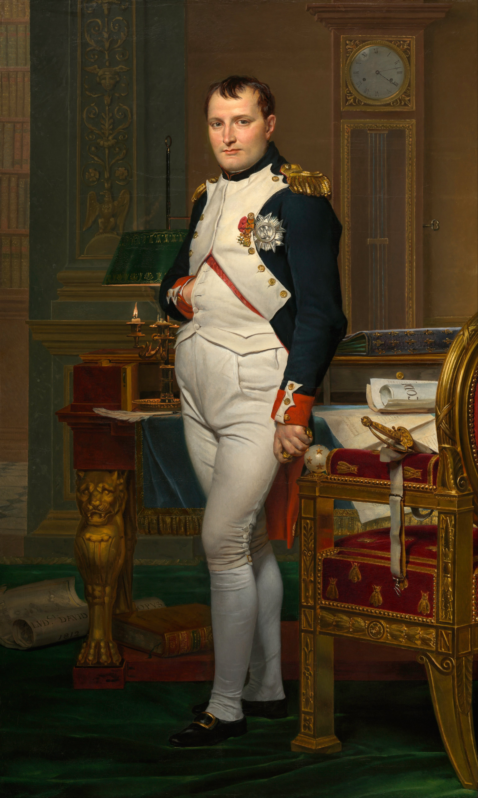

Napoléon Bonaparte

The Emperor Napoleon in His Study at the Tuileries, by Jacques-Louis David, 1812
Introduction
Napoleon I is one of the most famous figures in history. An ambitious, charismatic leader
, Napoleon was also a reformer, revolutionizing the French military, reorganizing French
education, and sponsoring the Napoleonic Code, a model of later civil-law codes. His driving
passion, however, was to expand French dominion through military conquest.
Education and Early Military Career
After graduating from military school in France, Napoleon was made second lieutenant of artillery
in the regiment of La Fère when he was only 16 years old. Later influenced by his readings of
Voltaire and Jean-Jacques Rousseau, he believed a political change was imperative in France but,
as a career military officer, he seems not to have seen the need for radical social reforms. He
achieved his first military successes during the French Revolution. Napoleon supported the National
Convention, the new governmental body of France that had abolished the monarchy. His distinguished
military service helped him rise through the ranks. In 1795 he put down an insurrection against the
National Convention in Paris. He was regarded as a hero for saving the National Convention and the republic.
Napoleon's Rise to Power
In 1796 a new governing body, the Directory, made Napoleon the commander of the French army in Italy
, which was then fighting the Austrians and their allies. The Italian campaign showed Napoleon's
military genius. He bewildered his enemies with his rapid movements. He eventually carried the war into
Austria itself and had advanced to within 80 miles of Vienna when the enemy surrendered. He concluded
the Treaty of Campo Formio, which gave France more territory. After a failed invasion of Egypt, he
returned to France, where the political situation had become unstable. The Directory had lost its
popularity among the people. Napoleon saw an opportunity for self-advancement. He joined in a plot
that, in November 1799, overthrew the Directory. In its place was set up a government called the Consulate
, with Napoleon as the first of the three consuls. Within three years he was made first consul for
life. Napoleon instituted reforms in post-revolutionary France, starting with a complete overhaul of military
training. He also centralized the government, reorganized the banking and educational systems, supported
the arts, and improved relations between France and the pope. His most significant achievement was the
Napoleonic Code, which streamlined the French legal system. Continued political opposition from royalists
and others soon convinced Napoleon that the best way to discourage conspiracies against him would be to
transform the life consulate into a hereditary empire. On May 18, 1804, the French empire was
proclaimed. Napoleon was consecrated emperor of France by Pope Pius VII in Notre-Dame Cathedral on December 2.